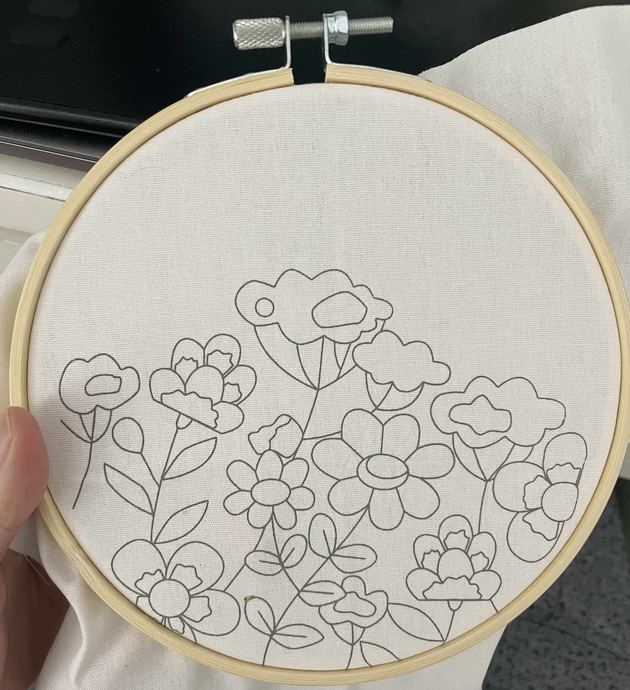
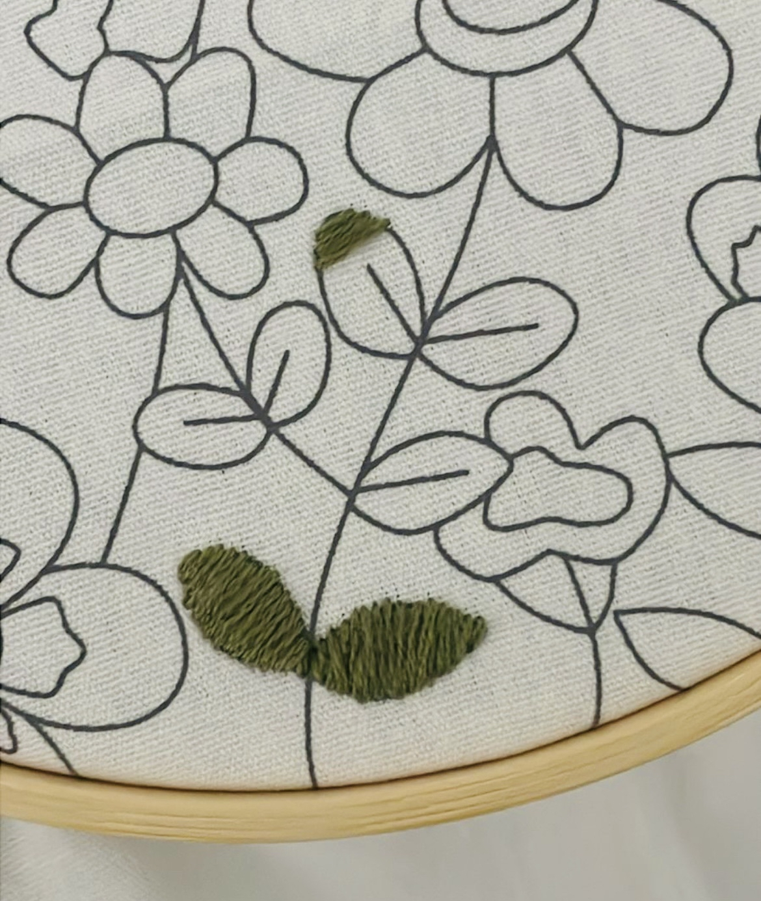
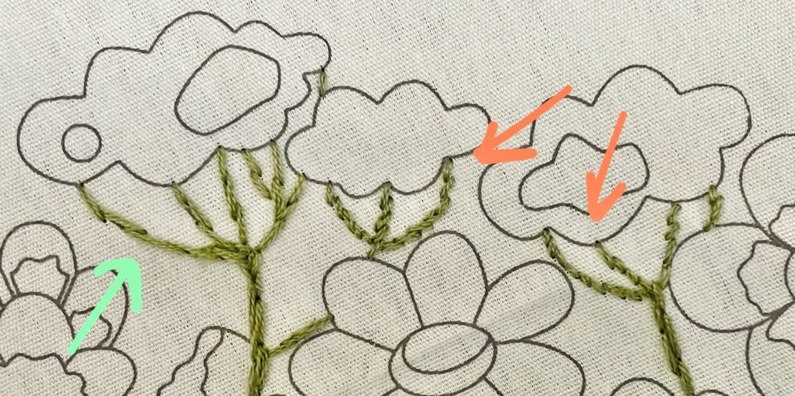
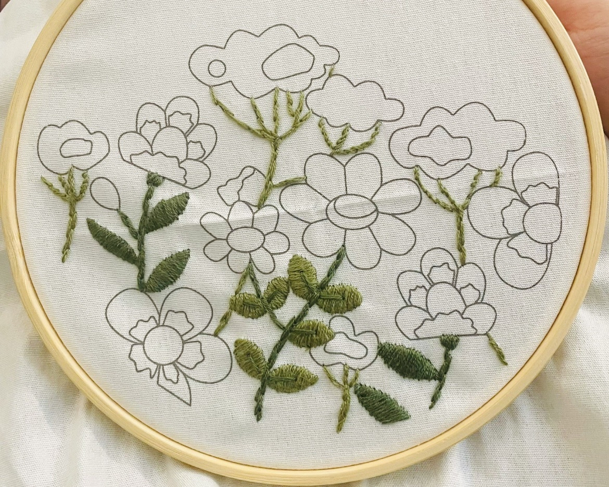
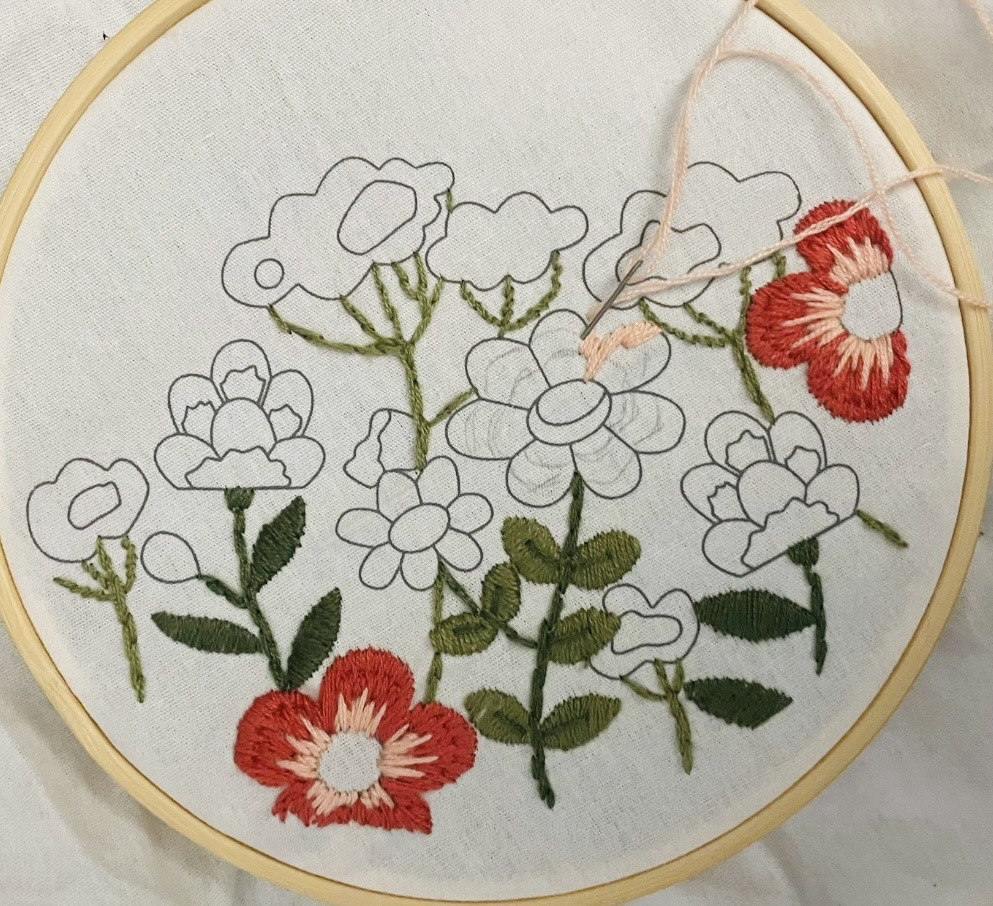
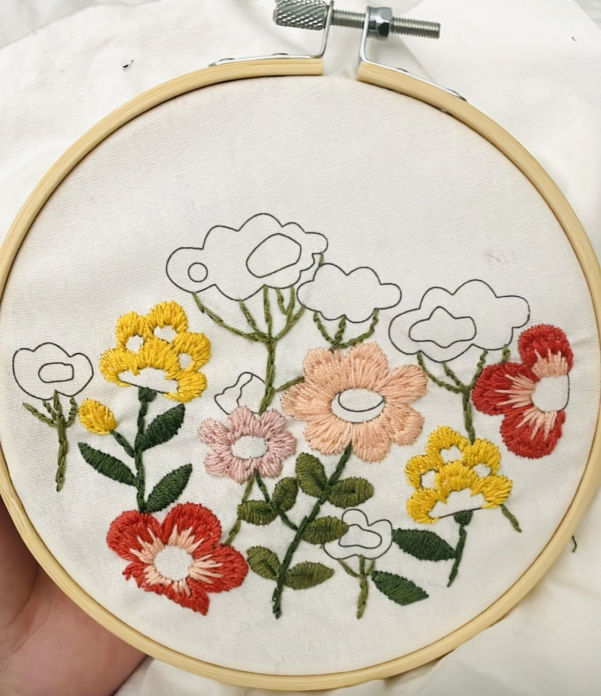
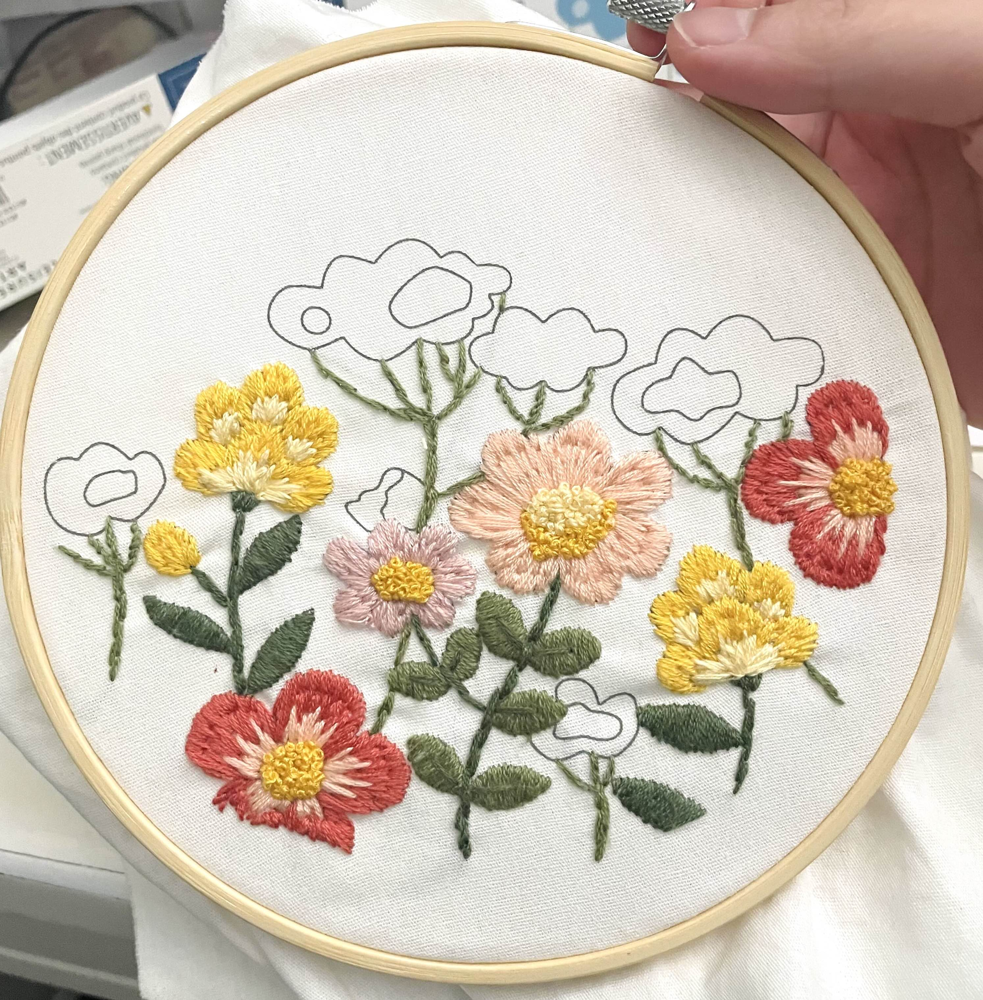
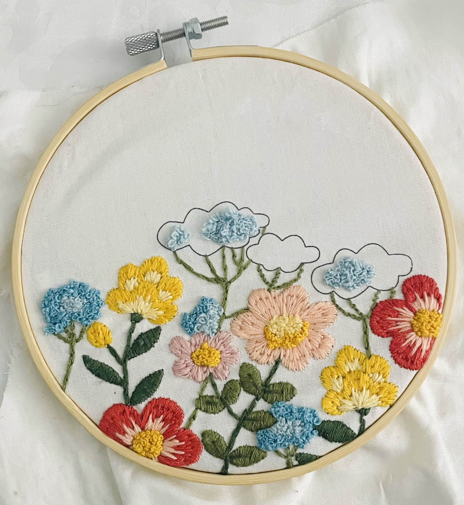
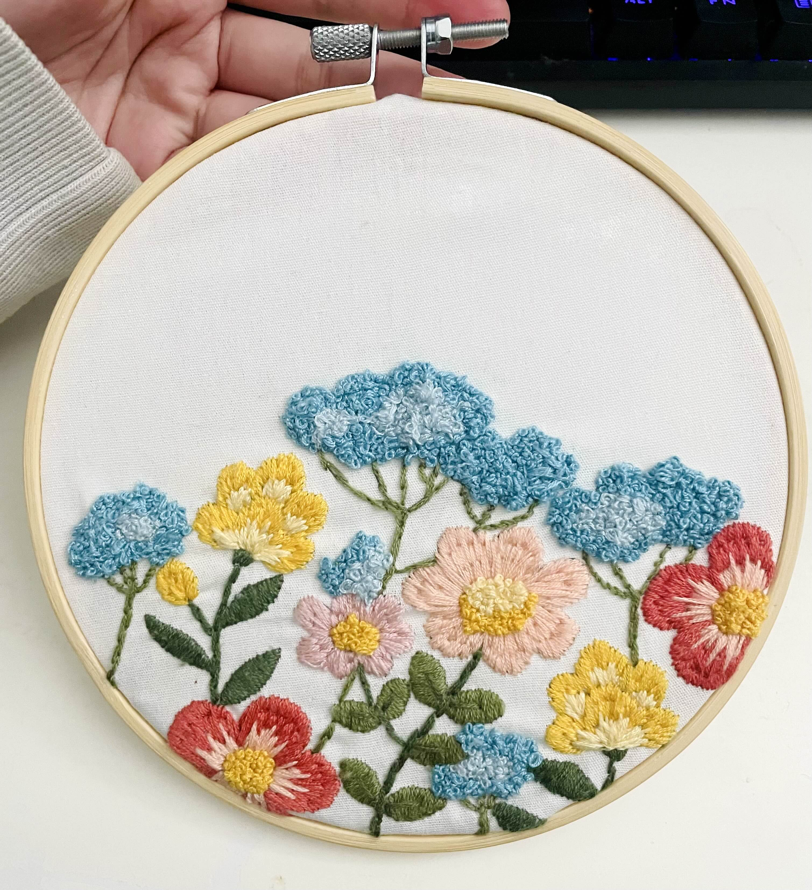

[2026/01/14]
I Tried Embroidering
I found a cheap embroidery kit and bought it impulsively. Prior to this I have no idea how any of this works. My favorite jacket has several lost buttons because I don't know how to sew them back on. I'm completely blind to the world of yarn and needles and the only reason I bought this was because I was sick of looking at my computer screen - I wanted to do something else in my free time that was better than getting mad over braindead tweets.

This design was made by Ria Paramita, an Indonesian artist. It's called "Garden Fresh".
I had to look up how to embroider on Youtube. I was very determined to get everything to look good because I already used some of my money to buy this kit and I thought that if it didn't look good in the end I should jump off a cliff. I know that no one does things perfectly on their first try, but I have to justify my useage of money...
I started with the easiest part first, which is the leaves. The leaves are done by satin stitching. Satin stitching is what I think comes to mind when people talk about putting threads through a piece of cloth. You just line them up close together so it fills up an area with color. The trick I learned, is to stitch them far apart, and then go inbetween to fill them out. You have to overspill the threads a little bit so the sketch underneath doesn't show. While I was doing the leaves, I was thinking "woah, this is my first time sewing something. Isn't that monumental?" Whenever I do somethng for the first time, I think that. It's crazy to me that I'm an adult and I still find new ways to live life. Now look at my first leaves. Aren't they cute?

The next part is the stems. I have to do (the appropriately named) stem stitching for this one. It's where you make little dashes of the thread and make lines or curls that way. I wasn't doing it properly at first, but got the hang of it later. You could see the difference in the finished product and I thought it was funny. Teal arrow was the first attempts. Orange arrows were the later attempts.


The next part were the red flowers. This one has red outer petals and pink inner petals, so I had to do straight stitching. This is a series of straight thread lines, but they alternate in where they begin and end, so it makes a sort of pattern that looks continuous. It helped to blend the gradient more even though I only had two colors. I remember having a lot of trouble with this one because I put too much threads inside the needle and I had a hard time pulling the needle through the cloth. Even a few weeks later, the skin on my pointer finger is still hard from how much I forced it to bring the needle through the cloth. The lesson I learned is to not use more than 3 threads in a needle.
For straight stitches, I found that it's very helpful to use a pencil to lightly draw on top of the design where each thread should alternate to create the pattern.

You can tell that I ran out of the pink thread and had to resort through using a purpleish-pink thread for the middle flowers. I didn't check my colors clearly enough. It bothers me a little bit.
The next ones are the yellow flowers. They are a straight stitch too. I kind of learned quickly that embroidery takes a long long time to do, because about four or five days have passed up to this point.

The next part was just filling the insides of the flowers. For the red and pink flowers, I had to learn how to do a french knot. When I looked it up, I saw that a lot of artists complained about it being a very annoying kind of stitch to do, so I got kind of scared. It turned out to be a bit tricky to do but otherwise I could do it. Everytime I messed up though, I had to cut the thread early because the knot was made too far from the cloth so the thread wouldnt go all the way in, leaving this weird hanging thread thing. That annoyed me a bunch. But the texture I got from it is pretty worth it. It looks very cute!

The rest of the flowers from here on out were the blue flowers that all consisted of french knots. It took me a while to fill up, probably three days!! But I was so close to the finish line... The thing that kept me going here was to show the finished art to my friends because I have only told one person about my embroidering adventure. I try not to tell anyone that I'm working on projects so that I actually have the incentive to finish them and actually show them the finished thing.

After about two weeks of on-and-off working, I finally finished it!

I had a lot of fun during the process. I still have some leftover threads so in the future I'll try more embroidery. While it's tedious, I think it was honestly really fun, and as a digital artist it felt good to actually have made something physical and tangible for once. I kept looking at this and going, "woah, I made it, and I can touch and feel it, that's new."
When I'm an old person one day, and I lost my ability to do digital art or something like that, I'll probably just spend my days playing with yarn like this.